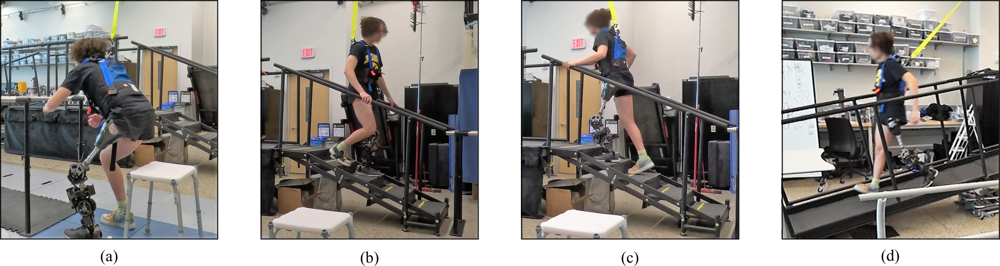

全部项目
量产系统 + 科研工作

Moonwalkers 控制系统（ShiftOS）
量产面向机器人鞋的实时步态控制系统，并完成嵌入式量产部署。

安全关键绊脚规避（TBME 2024）
科研基于实时预测与最小跃度轨迹重塑，实现对障碍物接触的主动规避。

连续转换控制（TNSRE 2024）
科研实现步行与上下楼梯之间的连续轨迹控制，对时序误差具有良好鲁棒性。

连续阻抗过渡控制（TNSRE 2026）
科研在站立相内连续混合阻抗，实现步行–楼梯假肢过渡的平滑控制。

过渡运动学模型（TMRB 2022）
科研统一建模步行与楼梯运动及其过渡过程的运动学表示。

自动活动识别（T-RO 2025）
科研基于可解释特征与鲁棒状态转换逻辑，实现多活动识别与切换。

意图识别的迁移学习方法（RA-L 2024）
科研在低样本条件下实现跨用户意图预测的自适应与泛化。

智能手表手势控制（EMBC 2025）
科研基于低延迟通信与反馈的手势交互，用于系统模式切换。

截肢用户耐力实验研究（IROS 2023）
科研在疲劳与耐力约束下评估控制器的长期鲁棒性。

仿真到现实的阻抗个性化
科研结合 MuJoCo 数字孪生与强化学习，实现安全的个性化控制参数优化。